STATUS
Statut général
- Hub documentaire : prêt
- Arborescence Git : prête
- Contenu centralisé : première passe complète
- Médias originaux inclus : oui, avec lots visuels, références, documents et métadonnées d'import inventoriés
- Prêt pour initialisation Git : oui
Ce qui est déjà centralisé
- Noms et périmètre BZH PW / BZH POWER / BZH CHRONICLES
- Direction artistique
- Personnages
- BZH Card Game
- Album / musiques
- Merch et objets
- Certificats / OG / Attestations
- Projets annexes : roguelite, Minitel HUB 3D
- Prompts et guides créatifs
- Questions ouvertes pour arbitrage du canon
Ce qui manque encore côté médias
- PNG/JPG/SVG finaux de logos
- Rendus finaux de t-shirts / tentures / hoodies
- Covers d’album
- Fichiers audio
- Certificats exportés
- Sources modifiables des visuels
Ajouts V2
- Documentation longue sur l’EP, les morceaux, les paroles et scripts connus
- Archive-index des ZIP/PDF/SVG historiques évoqués
- Section événementielle BZH PW / Heures Steam
- Section web legacy BZH POWER / BZH Chronicles
- Micro-lore renforcé : Sniky, MutenRock, temple, lieutenant extérieur
- Communication détaillée : descriptions YouTube, hooks, hashtags, annonces
- Projets techniques enrichis : roguelite v3.1/v3.2, Minitel Hub Beta, MINI-STAR v1.1, piste runner Haste
Ajouts V3
- Dossier
docs/sources/consacré à la traçabilité - Archive thématique des messages utilisateurs originaux
- Citations originales classées par :
- centralisation du repo
- Card Game
- musique / EP
- web / mini-site
- événements Steam
- hub Minitel / projets techniques
- visuels, motifs, merch
- personnages / lore
- Tableau de couverture indiquant ce qui est :
- verbatim retrouvé
- fragment exact
- seulement synthétisable
Ajouts V4
- Archive de 45 conversations récupérées et structurées
- Index chronologique de 2024 à 2026
- Fiches individuelles par conversation
- Captures des citations originales disponibles
- Liens depuis chaque conversation vers les sections du HUB concernées
Ajouts V5
- Galerie média consultable générée depuis les fichiers suivis
- Import 2026-07-06 classé dans
assets/


 ,
, media/


 et
et archives/.png.webp)
.png.webp)
.png.webp)
.png.webp)


- Références visuelles, vidéos, icônes, documents de lore et sources Neokarceris inventoriés
- Métadonnées système d'import conservées à part dans
archives/import-metadata/ - Sas
imports/vidé des fichiers bruts, mais conservé comme point de dépôt pour les prochains lots


.png)
.png)
.png)
.png)


Ajouts V6
- Dossier
C:\Users\pierr\Desktop\BZHcopié en sas dansimports/2026-07-06-desktop-bzh/ - Source Desktop traitée en lecture seule, sans modification du dossier original
- Rapport d'analyse ajouté dans
archives/import-reports/2026-07-06-desktop-bzh.md - 231 doublons exacts détectés avec les médias et archives déjà classés
- 1 426 fichiers nouveaux détectés, avec blocage volontaire avant commit du lot brut complet à cause d'un fichier vidéo de plus de 100 Mo
- Vidéos du lot marquées en
reference-only: chemins et tailles uniquement, sans analyse de contenu
Ajouts V7
- Sous-lot
BZH_TCG_Imagestrié sans analyser ni promouvoir les vidéos du lot Desktop - 185 nouveaux visuels PNG TCG classés dans
assets/cards/ - 1 source Paint.NET conservée dans
archives/sources/tcg/ - 1 doublon exact ignoré car déjà présent comme
assets/cards/bzh01/bzhcard_bzh01_pack-layout_v01.png - Galerie média régénérable depuis ces assets TCG suivis
Ajouts V8
- Sous-lot audio
BZH_RESS\Sontraité sans analyse de contenu - 16 pistes MP3 classées dans
media/audio/tracks/ - 4 previews MP3 classées dans
media/audio/previews/site-song/ - 4 masters WAV conservés dans
media/audio/masters/ - Aucun doublon exact détecté avec les médias déjà suivis
Nettoyage du sas
- Dossier traité
imports/2026-07-06-desktop-bzh/BZH_TCG_Images/supprimé du sas local après classement - Fichiers audio traités supprimés de
imports/2026-07-06-desktop-bzh/BZH_RESS/Son/ - Dossiers vides supprimés du sas local
- Les fichiers vidéo, exports web/statistiques et visuels restants demeurent dans le sas pour tri ultérieur
Ajouts V9
- Sous-lot
LOL_TEAM_STATSmis de cote comme snapshot brut de statistiques LoL - 360 fichiers copies dans
archives/web/lol-team-stats/raw/


- Aucun lien direct ajoute dans le wiki ou la navigation publique du hub
- Aucun doublon exact detecte avec les fichiers deja suivis
Ajouts V10
- Sous-lots audio
Sniky The Frager MixetDernier souffletraites - 22 fichiers MP3 classes dans
media/audio/tracks/ - 5 variantes Sniky classees dans
media/audio/tracks/sniky-the-frager-mix/ - 17 pistes et variantes Dernier souffle / Echo Vide / Fantome de Chair classees dans
media/audio/tracks/dernier-souffle/ - Aucun doublon exact detecte avec l'audio deja classe
Ajouts V11
- Sous-lots visuels
Hermine,LEME,RTT,bzh_chr_album_wipet visuels racine traites - 42 visuels uniques classes dans
assets/logos/


 et
et media/visual/ - 4 doublons exacts internes conserves dans
archives/import-duplicates/2026-07-06-desktop-bzh/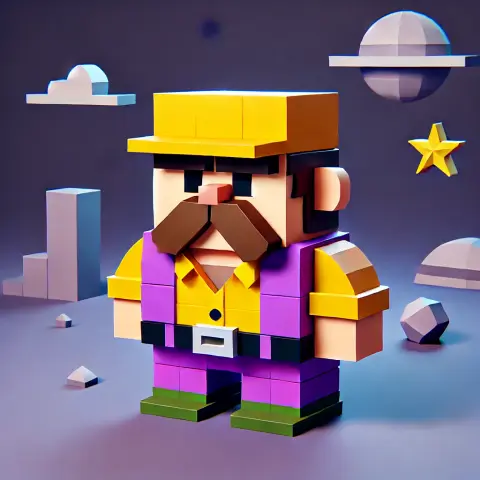
- 2 metadonnees Windows conservees dans
archives/import-metadata/2026-07-06/imports/2026-07-06-desktop-bzh/ - Galerie media regenerable avec ces nouveaux visuels

Ajouts V12
- Sous-lot
BZH_CHRONICLEStraite sans video - 25 visuels de cartes legacy classes dans
assets/cards/legacy/old-card/.png.webp)
.png.webp)
.png.webp)
.png.webp)
.png.webp)
.png.webp)
- 2 references visuelles classees dans
media/visual/references/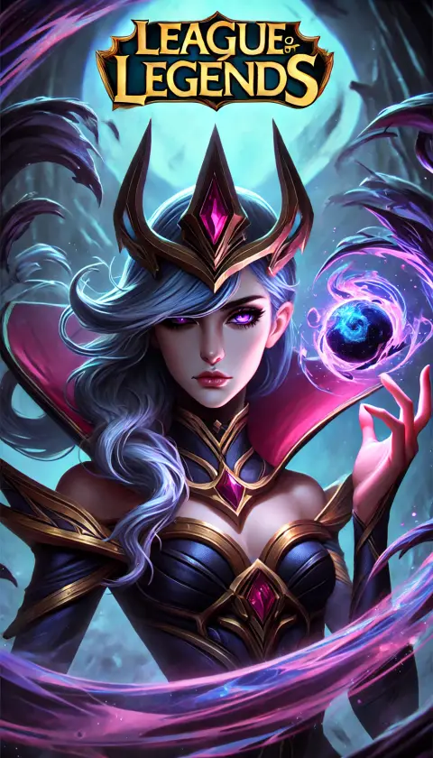
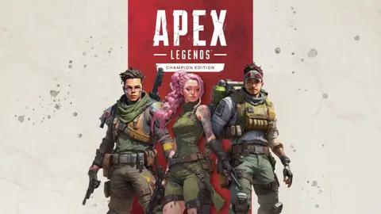
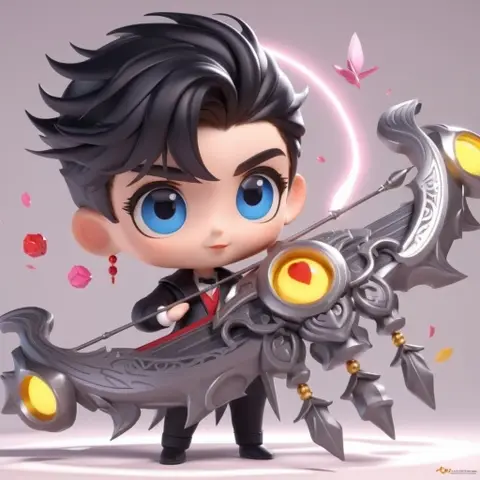
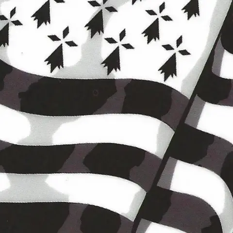
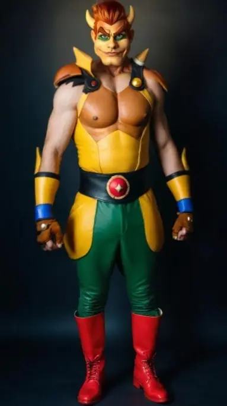

- 1 source Paint.NET conservee dans
archives/sources/webtoon/ - 5 doublons exacts internes conserves dans
archives/import-duplicates/2026-07-06-desktop-bzh/BZH_CHRONICLES/ - 116 doublons exacts deja suivis indexes dans
archives/import-reports/2026-07-06-desktop-bzh-bzh-chronicles-duplicates.csv
.png)
.png)
.png)
.png)
.png)
.png)
Ajouts V13
- Sous-lot partiel
BZH_RESStraite sur les visuels courts non video - 65 medias classes dans
media/visual/ - 1 fiche HTML Sniky complementaire conservee dans
archives/html/bzhpw-lore/ - 4 metadonnees Windows conservees dans
archives/import-metadata/2026-07-06/imports/2026-07-06-desktop-bzh/BZH_RESS/ - 4 doublons exacts internes conserves dans
archives/import-duplicates/2026-07-06-desktop-bzh/BZH_RESS/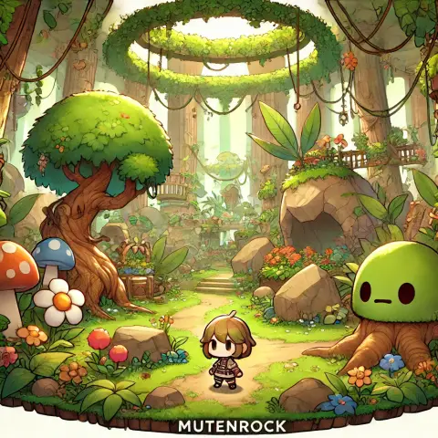


.webp.webp)
- 7 doublons exacts deja suivis indexes dans
archives/import-reports/2026-07-06-desktop-bzh-bzh-ress-visuals-duplicates.csv


.webp)
Ajouts V14
- Racine
BZH_RESStraitee hors video - 5 visuels classes dans
media/visual/ et assets/site/frames/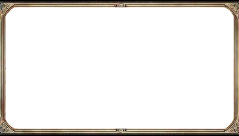
- 2 documents sources conserves dans
archives/documents/bzhpw-lore/ - 1 CSV de metadata conserve dans
archives/import-metadata/2026-07-06/imports/2026-07-06-desktop-bzh/BZH_RESS/ - 4 doublons exacts deja suivis indexes dans
archives/import-reports/2026-07-06-desktop-bzh-bzh-ress-root-duplicates.csv
Ajouts V15
- Sous-lot
BZH_RESS/Montagetraite pour les images fixes uniquement - 42 references visuelles classees dans
media/visual/references/ - 1 doublon exact interne conserve dans
archives/import-duplicates/2026-07-06-desktop-bzh/BZH_RESS/Montage/ - 136 videos
Montageconservees dans l'index reference-only ; le dossierMontagen'est plus present dans le sas local
Ajouts V16
- Sous-lot
bzhpwimageentame avec les petits lots non video - 9 covers / teasers album classes dans
media/visual/covers/bzh-pw-album-cover/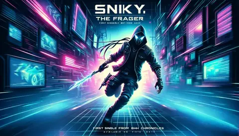
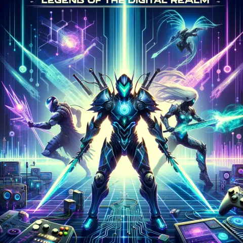
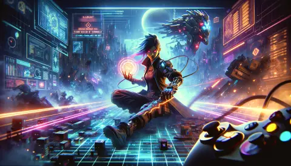
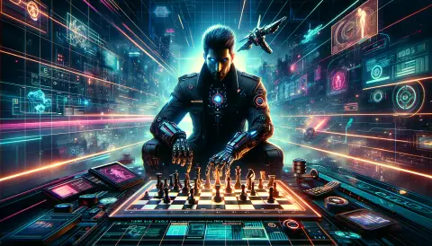
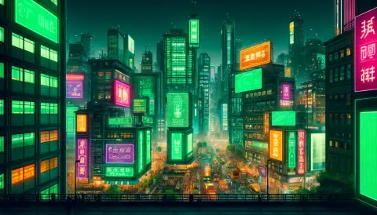
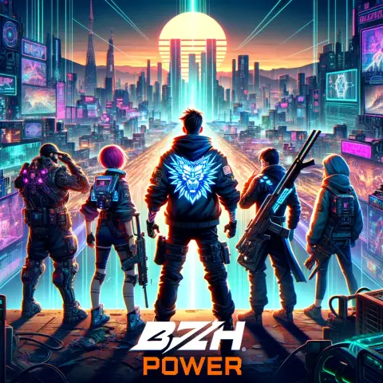
- 6 recherches RD art classees dans
media/visual/references/bzh-pw-rd-art/split/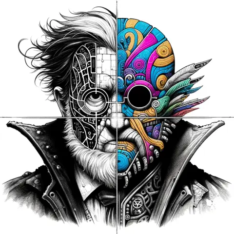
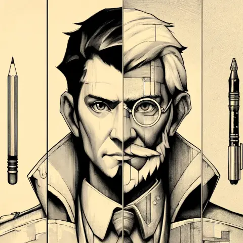
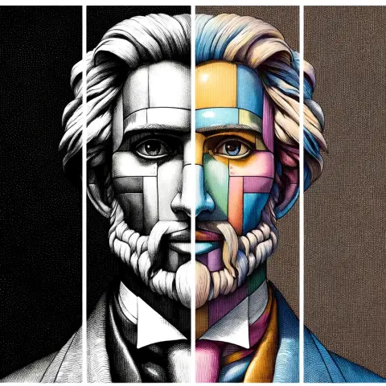
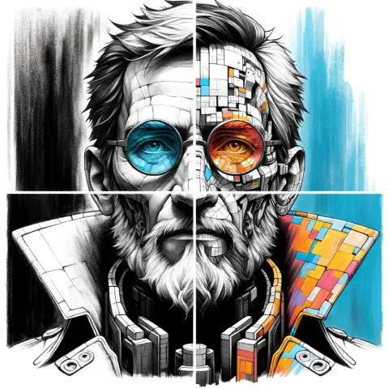
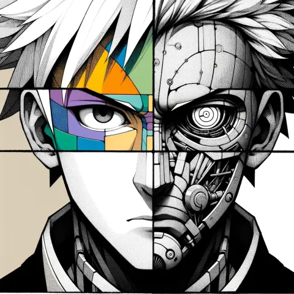
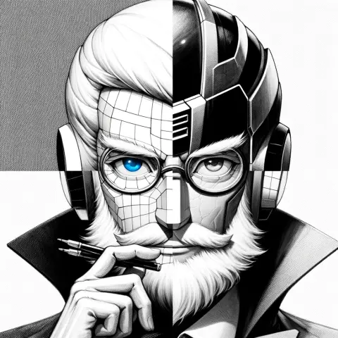
- 2 coloriages classes dans
media/visual/references/coloring-pages/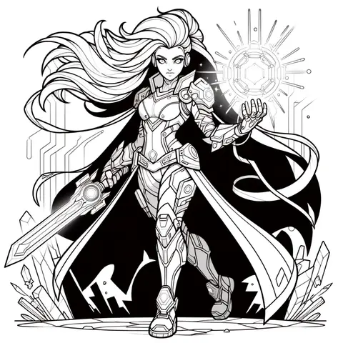
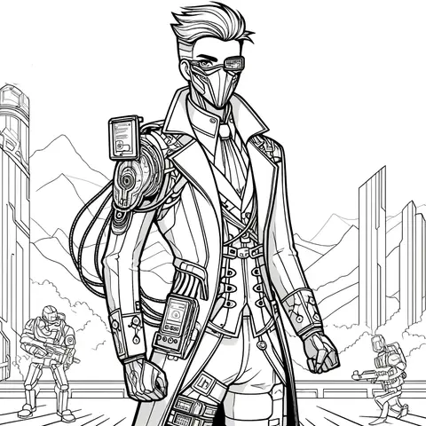
- 1 doublon exact deja suivi indexe dans
archives/import-reports/2026-07-06-desktop-bzh-bzhpwimage-small-duplicates.csv
Ajouts V17
- Sous-lot
bzhpwimage/bzh_chronicle_logotraite - 173 assets logo classes dans
assets/logos/bzh-chronicles/
- 1 source Paint.NET conservee dans
archives/sources/logos/bzh-chronicles/ - 2 doublons exacts deja suivis indexes dans
archives/import-reports/2026-07-06-desktop-bzh-bzhpwimage-logo-duplicates.csv

Ajouts V18
- Sous-lot
bzhpwimage/immmaaagegtraite - 42 references visuelles classees dans
media/visual/references/immmaaageg/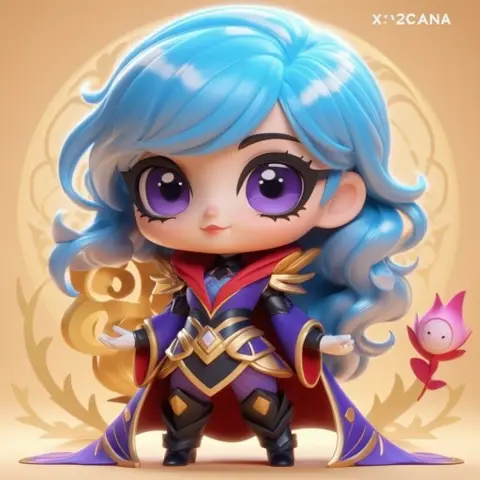
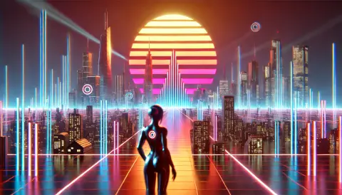
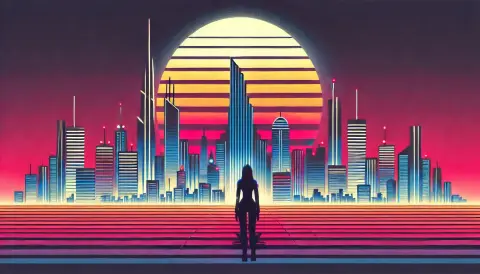
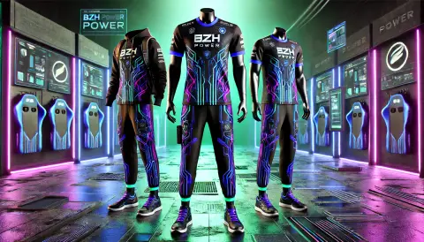
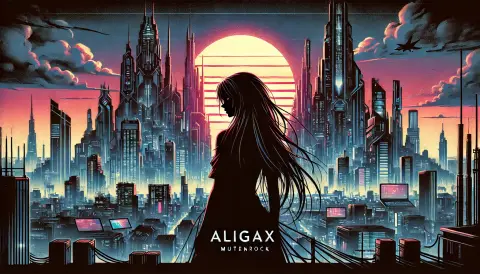
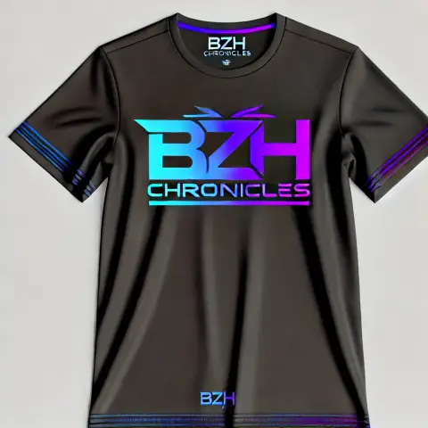
- 1 source Paint.NET conservee dans
archives/sources/bzhpwimage/ - 1 doublon exact interne conserve dans
archives/import-duplicates/2026-07-06-desktop-bzh/BZH_RESS/bzhpwimage/immmaaageg/ - 3 doublons exacts deja suivis indexes dans
archives/import-reports/2026-07-06-desktop-bzh-bzhpwimage-immmaaageg-duplicates.csv
Ajouts V19
- Sous-lot
bzhpwimage/bzh_pw_artworktraite hors video - 204 visuels classes dans
media/visual/ - 1 source Paint.NET conservee dans
archives/sources/bzhpwimage/ - 1 raccourci Windows conserve dans
archives/import-metadata/2026-07-06/imports/2026-07-06-desktop-bzh/BZH_RESS/bzhpwimage/bzh_pw_artwork/ - 3 doublons exacts internes conserves dans
archives/import-duplicates/2026-07-06-desktop-bzh/BZH_RESS/bzhpwimage/bzh_pw_artwork/ - 8 doublons exacts deja suivis indexes dans
archives/import-reports/2026-07-06-desktop-bzh-bzhpwimage-artwork-duplicates.csv
Ajouts V20
- Controle residuel du sas
imports/2026-07-06-desktop-bzh/ - 360 fichiers
LOL_TEAM_STATSverifies comme identiques a l'archivearchives/web/lol-team-stats/raw/ - 116 fichiers
BZH_CHRONICLESrestants confirmes comme doublons deja suivis - 25 fichiers non video
BZH_RESSrestants confirmes comme doublons deja suivis - 19 videos
BZH_RESSconservees reference-only, sans analyse de contenu - Synthese ajoutee dans
archives/import-reports/2026-07-06-desktop-bzh-sas-residuals.csv
Ajouts V21
- Traitement final des 520 fichiers residuels du sas Desktop BZH
- 19 videos promues dans
media/video/references/desktop-bzh/et exposees par la galerie media - 501 fichiers non video retires de
imports/apres verification : archive LoL interne deja copiee et doublons exacts deja indexes - Page hub ajoutee :
docs/archives/import-desktop-bzh.md - Mapping source/destination videos ajoute dans
archives/import-reports/2026-07-06-desktop-bzh-video-promotions.csv imports/ne contient plus que son README source et son HTML genere
Ajouts V22
- Analyse visuelle de premier niveau des 19 videos Desktop BZH promues.
- Rattachement wiki ajoute pour Aligax, MutenRock, musique, trailers/scripts, merchandising et direction artistique.
- Les videos watermarkees restent documentees comme references de direction, pas comme assets finaux.
Ajouts V23
- Navigation wiki renforcee : index recompose en parcours rapides, sidebar enrichie et topbar clarifiee.
- Hub d'accueil complete avec des entrees par besoin : medias, imports, sources et orientation globale.
- Surlignage automatique de la page courante dans les liens de navigation HTML.
Ajouts V24
- Guideline Git ajoutee dans
CONTRIBUTING.md: status de depart, commits cibles, push, verification remote et interdiction des nettoyages destructifs non demandes. - Index documentaire relie a la page contribution / Git pour rendre la regle retrouvable depuis le wiki.
Ajouts V25
- Recherche globale statique ajoutee pour les pages wiki et les medias exposes.
- Page
docs/identity/statuts-canon.mdajoutee pour distinguer canon, reference, archive, interne et source brute. - Pages pivots renforcees : personnages, carte des projets, musique et atlas media.
- Rattachements croises ajoutes pour Aligax, MutenRock et Sniky.
Ajouts V26
- Rattachements croises ajoutes pour Spirit, Spike, Dr. Sorn, Gabilone / Gabylon et Titan.
- Pivot personnages enrichi avec les relations fiables a garder visibles.
- Musique et catalogue media alignes avec
Spirit's Rage,Titan: The Guardian Hound, Spirit / Spike et Sniky / Titan.
Ajouts V27
- Carte des projets enrichie avec Runner BZH et Pirate Chronicles.
- Fiches projets renforcees avec statut, rattachements utiles et suites de lecture.
- Livrables historiques relies aux pages projet pour distinguer archive, prototype, piste et canon.
Ajouts V28
- Galerie media enrichie avec titres lisibles, collection et statut par fichier, sans renommer les sources.
- Atlas rapide ajoute en haut de galerie pour parcourir les familles media par categorie et statut.
- Recherche globale media enrichie avec collection et statut.
Ajouts V29
- Lot
lemegeton_chronicles_fm_sprite_packclasse horsimports/. - 202 sprites, masques, sheets et atlases Lemegeton classes dans
assets/characters/lemegeton/


 .
. - Inspirations et concepts Lemegeton consultables dans
media/visual/references/. - Preview et tuner Lemegeton conserves comme archives web locales.
- Images racine du sas classees : reference TCG
The Mask of Sorn, reference visuelle Sorn et doublons d'import.


Ajouts V30
- Rubrique LEMEGETON ajoutee comme dossier personnage dedie.
- Navigation wiki enrichie avec un acces direct LEMEGETON dans la sidebar.
- Pivot personnages, index documentaire, Minitel HUB 3D et catalogue media relies aux assets LEMEGETON.
- Statut clarifie : personnage-interface / robot Minitel en
reference, canon narratif a confirmer.